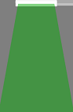
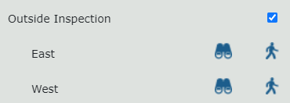
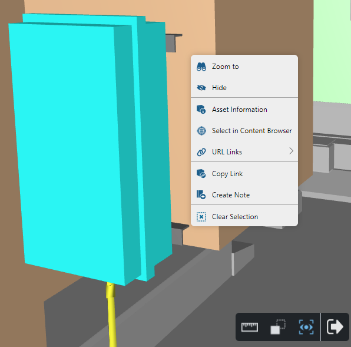
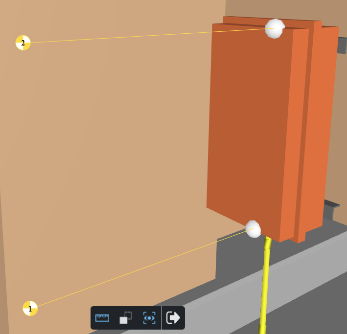
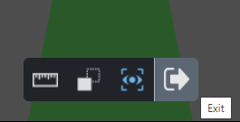

ルート
表示マネージャの[ルート]パネルでルートを選択すると、ルートを 3D ビューアに表示できます。
ルートをアクティブにしてたどる方法の例については、以下の「ルートをナビゲートする方法」セクションを参照してください。
ルート要素
一般的なルートは、次の要素タイプで構成されます。
| 1 つ以上のウェイポイント(またはスタートポイント)。特定のルートに定義されたすべてのウェイ ポイントが[ルート]パネルに表示されます。各ウェイポイントは、カメラフォローモードを有効にする際の開始点として使用できます。 |
 | 1 つ以上の接続されたパス。パスはカメラをある位置から別の位置に移動します。 |
| 0 個以上の接続されたジャンクション。パスに沿って移動とき、ジャンクションは常にカメラの動きを停止し、ユーザーが次のパスを選択できるようにします。 |


表示されているルートを非表示にするには、表示マネージャーでルートの選択を解除します。
カメラをフォローする

[ルート] パネルのウェイ ポイントの横に表示される [カメラをフォロー] ボタンをクリックすると、カメラをフォロー モードをアクティブにできます。
カメラ追跡モードを有効にすると、次のことが行われます。
- 3D ビューア カメラを選択したウェイ ポイントの 1.8 m 上に配置します。
- 接続されたパスの 1 つの方向に沿ってカメラを位置合わせします。
- ビューアのツールバーを変更して、カメラ追跡モードに関連するコマンドのみを表示します。
カメラ追従モードでの動き
Wまたは上矢印キーを押して、カメラを現在のパスに沿って前方に移動します。
Sまたは下矢印キーを押して、カメラを現在のパスに沿って後方に移動します。
左に曲がるには、 Aまたは左矢印キーを押します。
右に曲がるには、 Dまたは右矢印キーを押します。
マウスの左ボタンを押したままマウスを動かして、任意の方向 (上下を含む) を見回します。
Escキーを押してカメラ追跡モードを終了します。
移動中 (前方または後方の両方)、カメラはジャンクションに到達すると自動的に停止します。
各交差点では、カメラの方向に最も近いパスが、次にたどるパスとして自動的に選択されます。このパスも緑色で強調表示されます。
カメラツールバーをフォロー

カメラ追跡モードでは、次のビューア コマンドのみが使用できます。
| ビューアを測定モードに設定します。測定モードでは、測定点を配置できます。 |
| X-ray - ビューア内のすべてのアセットが、X 線画像に似た灰色の透明な外観を使用して表示されるように設定するコマンド。不透明に表示されたままになる唯一のアセットは、現在選択されているアセットです。したがって、この表示モードは、大規模なシーン内で選択されたアセットをすばやく見つけるのに役立ちます。 |
| 自動位置合わせ- 自動位置合わせモードがアクティブな場合、カメラの方向は現在のパスの方向に自動的に位置合わせされます。
|
| 終了- カメラ追跡モードを終了し、以前にアクティブだったビューア モードに戻ります。 |


上記のコマンド以外のビューア機能 ( Zoomなど) は機能しないことに注意してください。 または[スクラッチ パッド ページの作成] を使用できます。 |
ルートの移動方法
- ルート名の横に表示されるチェックボックスをオンにして、表示マネージャでナビゲートするルートを表示します。

- ルートで使用可能なウェイ ポイントの 1 つを選択し、[ルートをたどる]アイコンをクリックします。これにより、3D ビューアがカメラ追跡モードに切り替わります。

- [表示マネージャ]パネルのタブをクリックして、パネルを折りたたみます。
- これで、選択したウェイポイントに位置し、ウェイポイントにつながるパスの 1 つに面しています。このパスは緑色で強調表示されます。

- ハイライト表示されたパスの終了にあるジャンクションに進むには、 Wまたは上矢印キーを押したままにします。
- ジャンクションに到達すると、前進は自動的に停止します。目の前にあるパスがハイライト表示されます。

- マウスの左ボタンを押したまま、現在のジャンクションから左に向かうパスが強調表示されるまでマウスを左に移動します。

- Wまたは上矢印キーをもう一度押したままにして、次のジャンクションに進みます。自動位置合わせモードが有効になっているため、カメラの方向は移動したパスの方向と一致するように自動的に調整されます。
- ルートの終了に到達するまで、前の手順を繰り返します。
- 移動の途中で停止してモデルの一部を詳しく調べたい場合は、押しているキー ( Wまたは上矢印) を放すだけで、動きがすぐに停止します。
- 移動いないときは、選んで測定できます。
- 表示されたアセットの 1 つを左クリックして選択します。アセットコンテキスト メニューを使用して、選択したアセットに対して、メモの作成やアセット情報の表示などのアクションを実行できます。

- 測定モードに切り替えて測定点を配置することもできます。

- ルートの移動が完了したら、 Escキーを押すか、 [終了]ボタンをクリックしてカメラ追跡モードを終了、デフォルトのビューア設定に戻ります。
